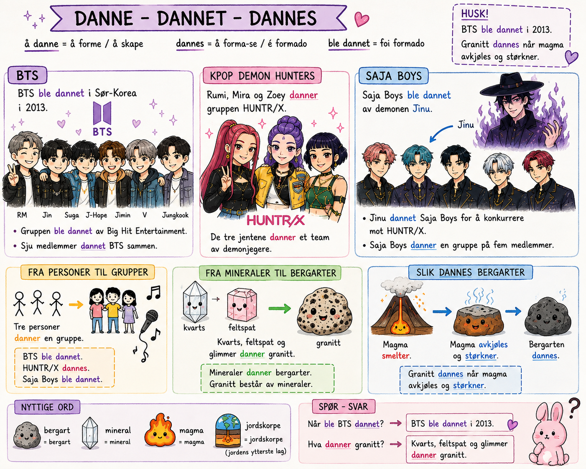

Ett ord · Mange steder
danne
Det samme ordet dukker opp i K-pop, på skolen, i naturen og i geologi. Kjenner du det igjen overalt?
å danneå forme / å skape
dannergjør det nå
dannetgjorde det før
ble dannetnoen andre gjorde det
dannesdet skjer av seg selv
Steg 1 av 4 · Det du kjenner
🎤 K-pop

BTS ble dannet i Sør-Korea i 2013.
Gruppen ble dannet av Big Hit Entertainment.
Rumi, Mira og Zoey danner gruppen HUNTR/X.
Saja Boys ble dannet av demonen Jinu.
👥 Mennesker
Tre jenter danner en gruppe.
Elevene danner en sirkel.
Spillerne danner et lag.
Edel og vennene hennes dannet en lesegruppe.
Steg 2 av 4 · Samme ord, ny plass
❄️ Natur
Vann fryser og danner is.
Snø kan danne et tykt lag på bakken.
Skyer dannes når vanndamp avkjøles.
Regndråper dannes i skyene.
🪨 Geologi
Mineraler danner bergarter.
Kvarts, feltspat og glimmer kan danne granitt.
Magmatiske bergarter dannes når magma avkjøles og størkner.
Noen bergarter ble dannet for millioner av år siden.
Legg merke til
Samme ord – helt forskjellige steder. Personer danner grupper. Mineraler danner bergarter. Vann danner is.
Steg 3 av 4 · Fyll inn
Hvilket ord mangler? Alle svarene er en form av «danne».
Tre personer ______ en gruppe.
Vann fryser og ______ is.
Mineraler ______ bergarter.
BTS ______ i Sør-Korea i 2013.
Steg 4 av 4 · Uten hjelp
1 · Svar med hele setninger
Ingen alternativer denne gangen. Skriv svaret selv.
2 · Med dine egne ord
Forklar ordet «danne» med dine egne ord. Hva betyr det?
3 · Din egen setning
Lag én setning med «danne» om noe helt annet – ikke K-pop, ikke stein.